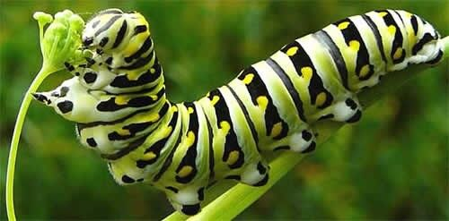
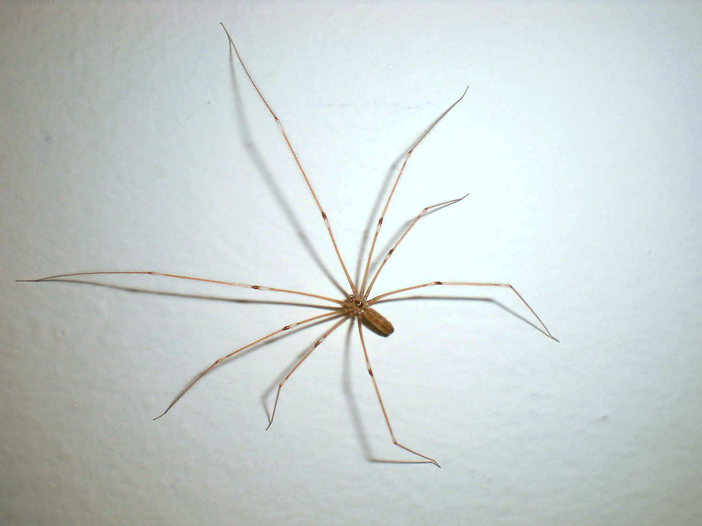
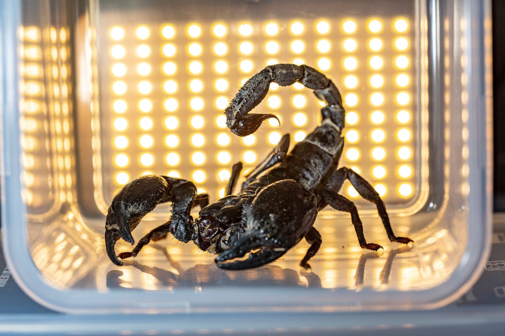
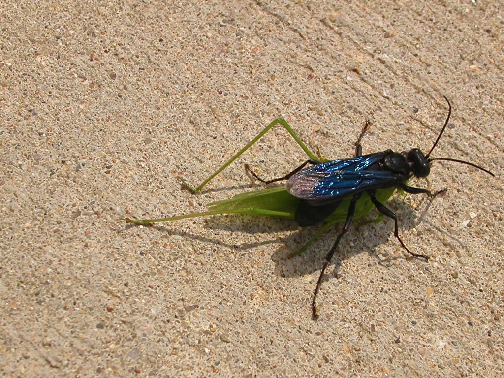
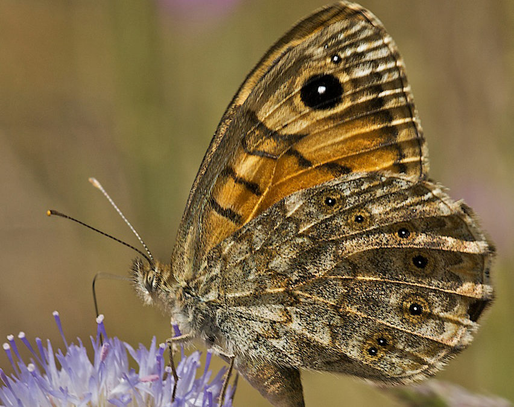
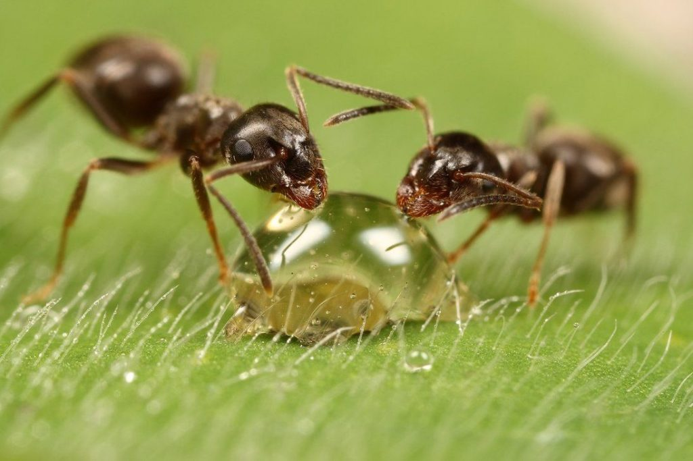
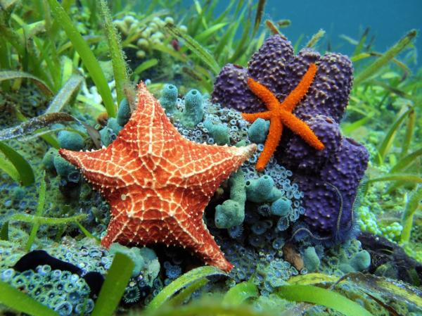
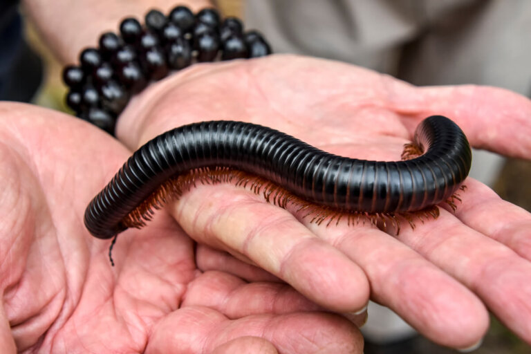
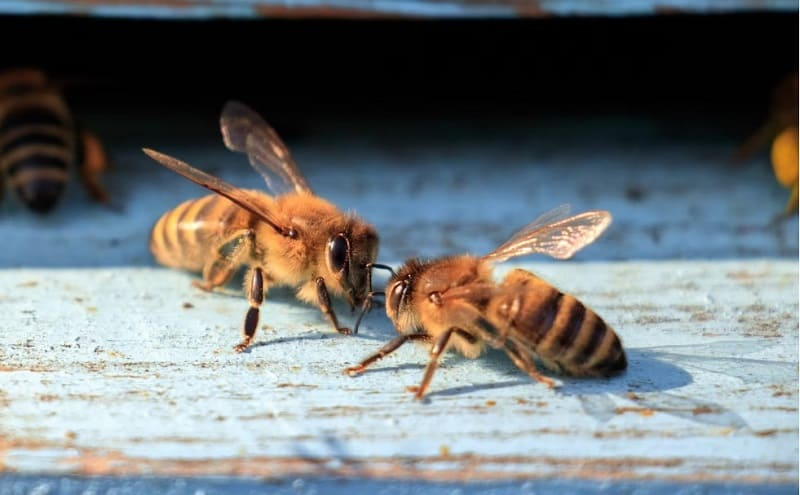

Los animales invertebrados son aquellos que no poseen un esqueleto interno...
Los animales invertebrados son el conjunto de especies del reino animal que no tienen columna vertebral ni esqueleto interno. En este grupo se encuentra el 95 % de las especies vivas conocidas (entre 1,7 y 1,8 millones de especies, según cifras de 2005).
Los invertebrados son un grupo de animales muy diversos, que habitan todo tipo de ecosistemas. Suelen ser de menor tamaño que los grandes animales vertebrados, terrestres o acuáticos. Aunque carecen de esqueleto, algunos animales invertebrados cuentan con un exoesqueleto (como los cascarudos) o un caparazón resistente (como las almejas).
Las principales características de los animales invertebrados son las siguientes:
La clasificación biológica tradicional de los animales invertebrados distingue entre los siguientes grupos:

Se denomina oruga a la larva de los insectos del orden Lepidoptera. Las orugas son típicamente blandas y cilíndricas. Algunas poseen vistosos colores, que advierten de su toxicidad o desagradable sabor.

La araña tigre, araña de patas largas o escupidora es un araña araneomorfa de la familia Scytodidae que puede encontrarse en zonas rurales y urbanas de Latinoamérica. En ciertas condiciones, puede actuar como depredador natural de la "araña violinista" o "de rincón".

Scorpiones es un orden de artrópodos arácnidos depredadores conocidos comúnmente como escorpiones o alacranes. Se caracterizan por contar con un par de pinzas de agarre y una cola estrecha y segmentada, a menudo formando una reconocible curva hacia delante sobre la espalda y siempre rematada con un aguijón.

Sphex es un género de himenópteros de la familia Sphecidae, comúnmente conocidas como avispas excavadoras. Se conocen más de 130 especies. Son depredadores cosmopolitas que pican y paralizan insectos presa. En preparación para la puesta de huevos construyen un nido protegido.

La mariposa saltacercas es una especie de lepidóptero de la familia Nymphalidae, subfamilia Satyrinae. Está extendida por toda la región paleártica con una variedad grande de hábitats y de número de generaciones por año. Envergadura: 36–50 milímetros.

Las hormigas son una familia de insectos eusociales que, como las avispas y las abejas, pertenecen al orden de los himenópteros.

Las estrellas de mar o asteroideos son una clase de equinodermos de simetría radial, con cuerpo aplanado formado por un disco pentagonal con cinco brazos o más. El nombre «estrella de mar» se refiere esencialmente a los miembros de la clase Asteroidea.

Los diplópodos, son una clase de miriápodos que se caracterizan por tener dos pares de patas articuladas en la mayoría de sus segmentos corporales dobles, o diplosegmentos. Se les conoce comúnmente como milpiés, aunque por lo general tienen entre 34 y 400 patas.

Las abejas pertenecen al clado de insectos himenópteros, sin ubicación en categoría taxonómica, dentro de la superfamilia de los apoideos. Se trata de un linaje monofilético con más de veinte mil especies conocidas.